26/1/6（Posted）TERUO＠teruo
First time in my life?? I tried making fried rice.
It was a normal 3.0, but I see some potential.
I used too little salt, but if I increase the salt, it could probably reach a 3.5.
There might be something beyond that.
Simple might be good.
I thought it might be a solid 3.5, but I’ll keep it at 3.0.
Well, yeah, probably a 3.0.
I’d end up being too easy on myself lol
But it has potential, so I’ll probably make it again.
It doesn’t have much of an unpleasant aftertaste.
Maybe because it’s just salt and pepper.
■TERUO Fried Rice
■Egg・rice
■Oil・salt・black pepper
■① Pour oil into a frying pan, crack in an egg, and make a rough fried egg
(the egg white kind of takes shape and the yolk doesn’t do it).
② Add rice. Break it up and mix with a spatula (roughly)
③ Add black pepper and salt. Then mix.
⇒★★★ 3.0
■Ate day：26/1/6
■Genre：Friedrice
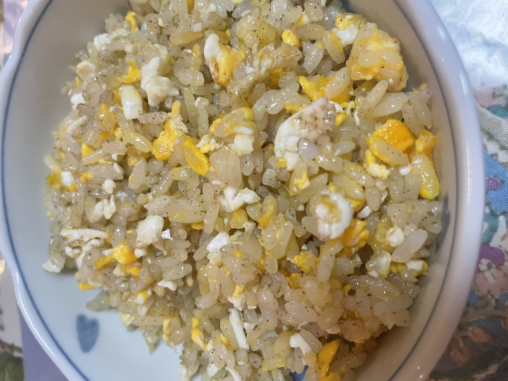
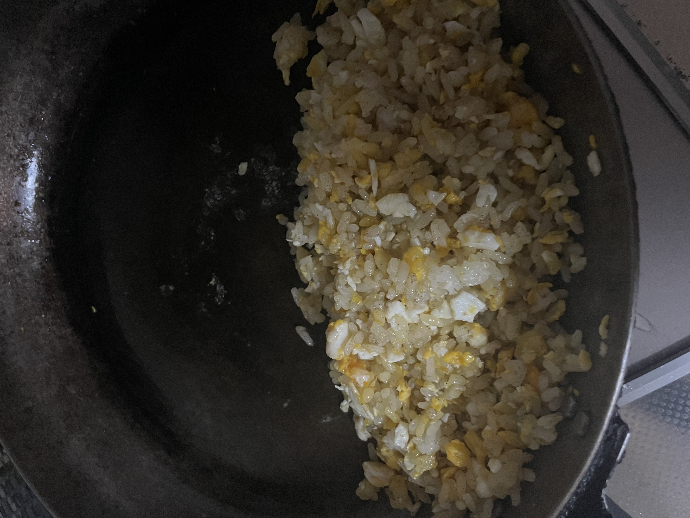（Photo taken by me）
【Premium Comment (Billing)】
26/1/4 (Posted) TERUO @teruo
Yeah--------!! The okonomiyaki I ate yesterday, 26/1/3, at Nanjamonja (Nagoya City, near Shiogamaguchi Station) was insanely good—so good that even a full day later, I’m still moved by it.
One of the reasons I created Yummy is because I truly believe that *what* you eat and *how* you eat it are absolutely essential to how delicious something becomes. When you put spicy sauce and mayonnaise on the deluxe okonomiyaki, it brings out every single aspect of its deliciousness.
Honestly, I kind of feel like it could’ve been a 5.0. I can’t help but think that, haha. It was really, truly amazing. Man… the best. This is what you call being moved.
Okonomiyaki
26/1/3 (Posted) TERUO＠teruo
Insanely delicious. A monster. Even a divine 5.0 rating would be fair. Seriously, this is god-tier.
I wonder how many times I’ve been here. Eating the Deluxe Okonomiyaki with spicy sauce and mayonnaise
is a 5.0. Divine. Too delicious. And the extra-spicy Yakisoba is truly amazing. Too good. And the surprising
Jaga Butter. A dish that surpasses Jaga Butter itself.
The Deluxe Okonomiyaki was so good that I ordered another one at the end. The flavor of the broth, or rather,
the seafood taste, is incredible. The world’s best okonomiyaki. If there’s something better, please let me know.
We ate as a pair.
Absolutely amazing. I might rate it 5.0, but I’ll stick with 4.5.
100% going again. I’ve been coming here forever.
And seriously, the spicy sauce and mayonnaise are essential.
■Deluxe Okonomiyaki: 2 pcs × Extra-spicy Yakisoba 2-spice large portion (Meat, Shrimp, Squid) × Jaga Butter
(×Absolutely, under any circumstances, put spicy sauce and mayonnaise on the Deluxe Okonomiyaki.)
⇒★★★★ 4.5
■NanjyaMonja
■NagoyaCity
■4350yen(Deluxe Okonomiyaki; 1200yen × 2 = 2400yen)
■Ate day: 26/1/3
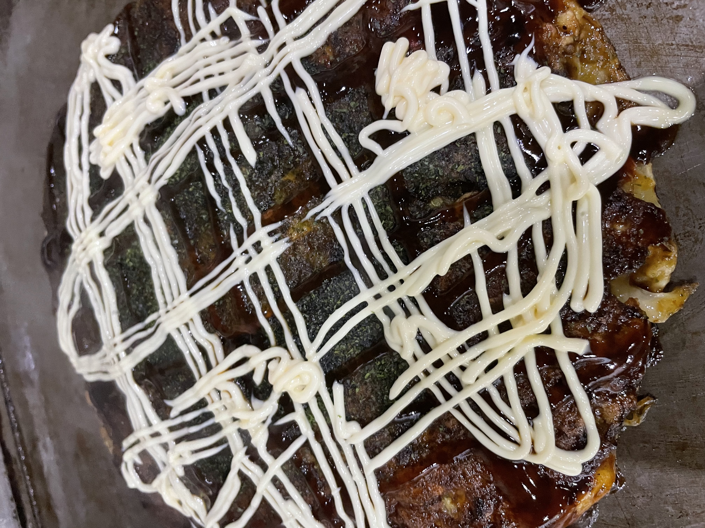
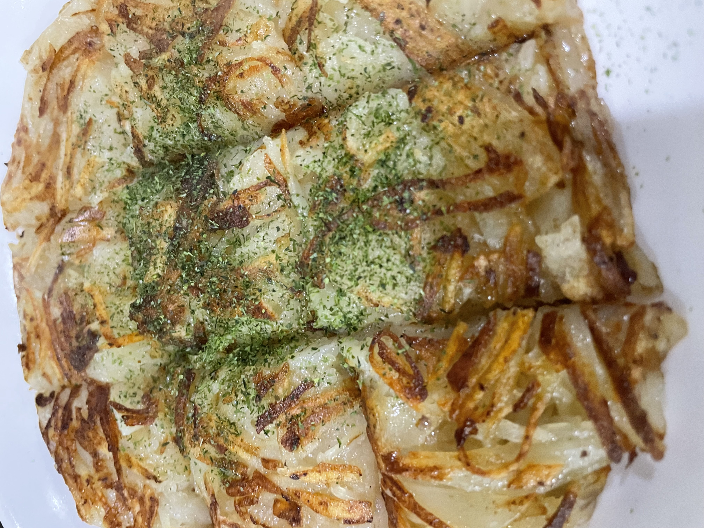
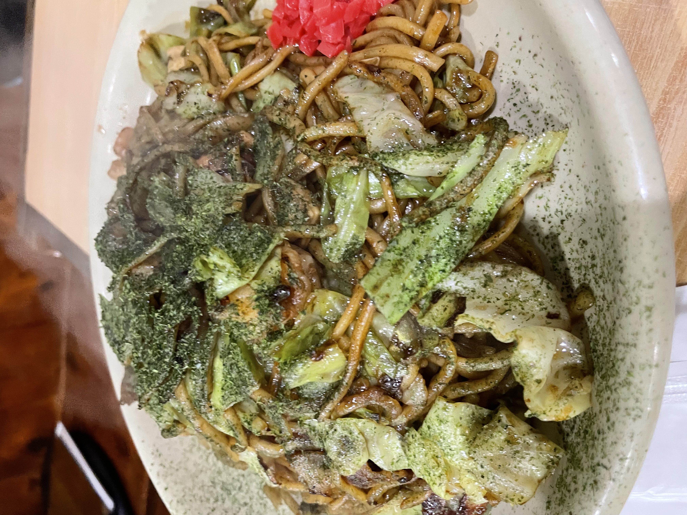 (Photo I took)
【Premium Comment (Billing)】
26/1/3 (Posted) TERUO @teruo
I had doria at Cocos on 1/2 (2026), and yeah—it's seriously good.
If you look at the doria section below, you can tell how different the photos of Cocos’ doria are between 12/2/25 and 1/2/26 lol.
It’s probably the amount of sauce. Even so, I honestly think Cocos’ doria is insanely delicious.
I really wish they’d just give us the recipe.
I want to make it at home.
At this point, I’m basically a Cocos master lol.
But hey—more masters, step up!!
Doria
26/1/2 (Posted) TERUO＠teruo
It was seriously delicious. It tastes like happiness. How good was it? So good that it made me want to try making doria at home.
Compared to when I ate doria at Cocos on 25/12/2, it felt like this one had more sauce. If you compare the photos, you can probably see the difference. That might be one reason why it was so good.
■Mini Doria
⇒★★★★ 4.0
■COCO'S(Meito Yomogidai branch)
■NagoyaCity
■About600yen
■Ate day: 26/1/2
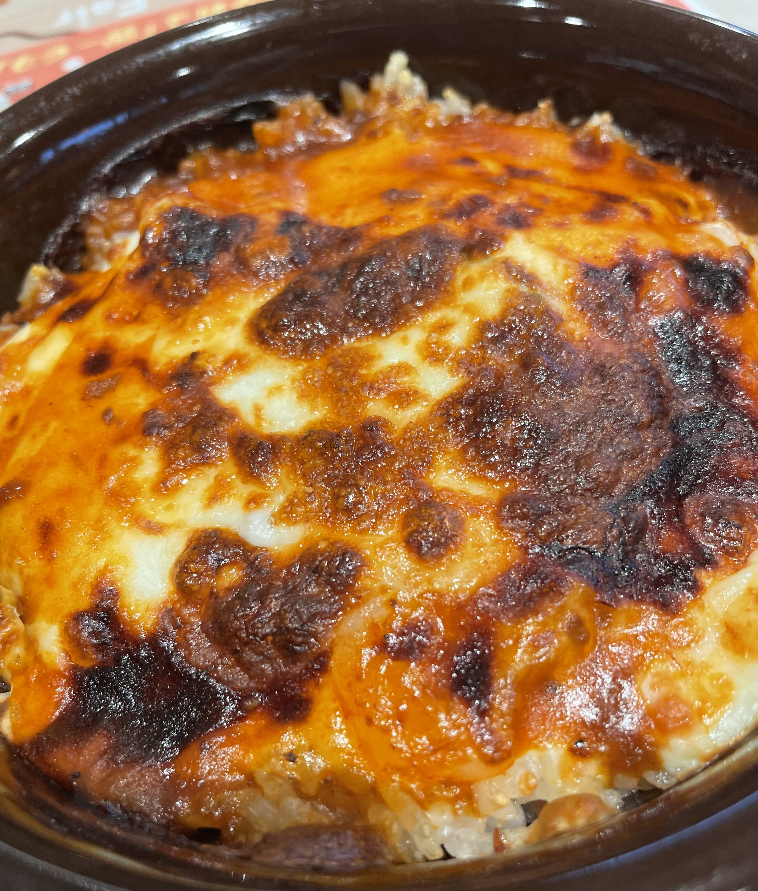 (Photo taken by me)
【Premium Comment (Billing)】
26/1/2 (Posted) TERUO @teruo
I didn’t buy it myself, and I didn’t cook anything either, but the seafood bowl I ate on 1/1 and 1/2 was really good.
It was made by putting sashimi—octopus, salmon, sea bream, bonito, etc.—bought from Lopia (the supermarket run by Katopan’s husband) on vinegared rice.
For some reason, it felt tastier than sashimi from an ordinary supermarket.
I once heard from a high school student who works part-time at Lopia that their fish is good, and yeah… that was legit.
If I remember correctly, Lopia originally started as a butcher shop, so I’d heard rumors that their meat is good—but honestly, their sashimi is great too.
It’s a supermarket that really makes you curious.
26/1/1 (Posted) TERUO @teruo
When I took the first sip of the soup,it had impact.
Somehow,it has a gentle flavor.
■Meat Ramen (× Start by taking a few spoonfuls of the soup first.)
⇒★★★★ 4.0
■Sugakiya(Aeon Mall Nagoya Dome-mae)
■NagoyaCity
■530yen
■Ate day: 26/1/1
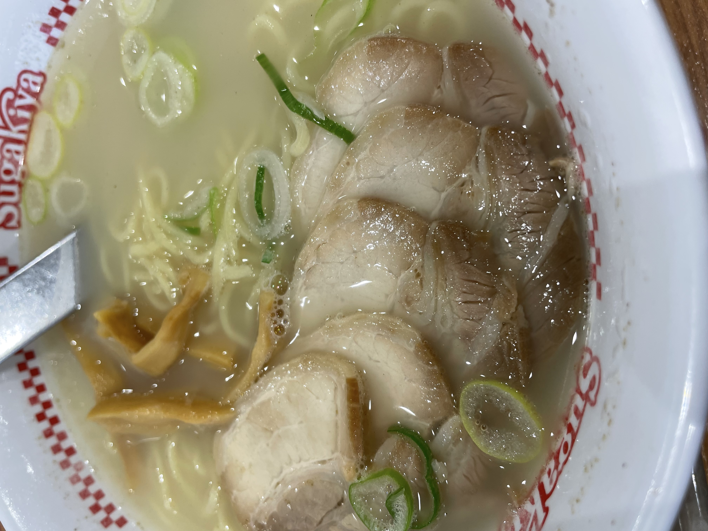 (Photo taken by me)
25/12/31（Posted on）TERUO＠teruo
good. That reassuring, comforting taste.
■Ramen with Meat
⇒★★★★ 4.0
■Sugakiya (Nagoya ESCA)
■Nagoya City
■590yen
■Ate day：25/12/30
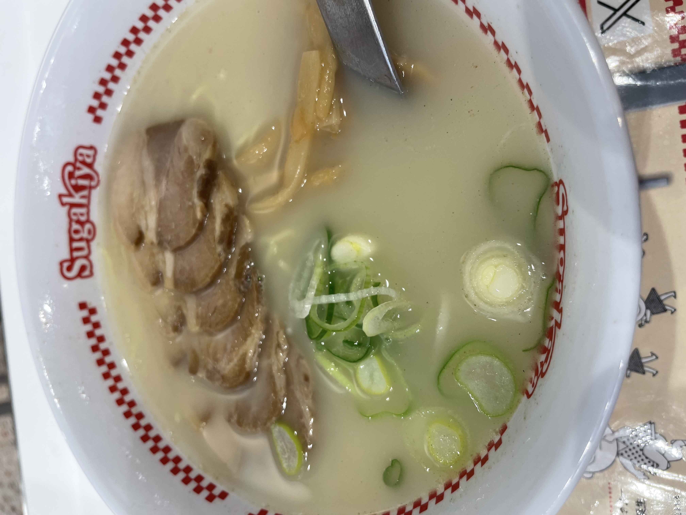 (Photo taken by me)
25/12/29（投稿日）YOSHIO＠yoshio
With a subtle saltiness and the natural sweetness of wheat, the dough itself is delicious, with a crispy texture. The gentle sweetness and juiciness of olive oil and mozzarella, combined with the outstanding sweet-and-tangy flavor of tomatoes. The aftertaste is light. “This is pizza.”
■Margherita, Cola（×First, eat it just as it is and savor it to the absolute limit!）
⇒★★★★⋆ 4.5
■Pizzeria e Trattoria da ISA
■〒153-0042 1-14-17 Aobadai, Meguro-ku, Tokyo
■3000 yen
■Ate day：25/11/2
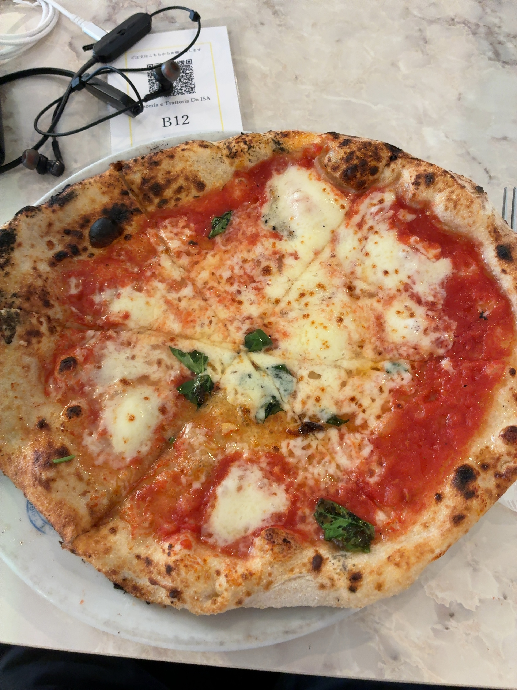

（Photos taken by me）
25/12/29（Posted） TERUO@teruo
High Quality.
■Ramen set（Tonkotsu ramen＋Tenshinhan）
⇒★★★⋆ 3.5
■Shisenrou
■Nagoya City
■780yen
■Ate day: 25/12/27
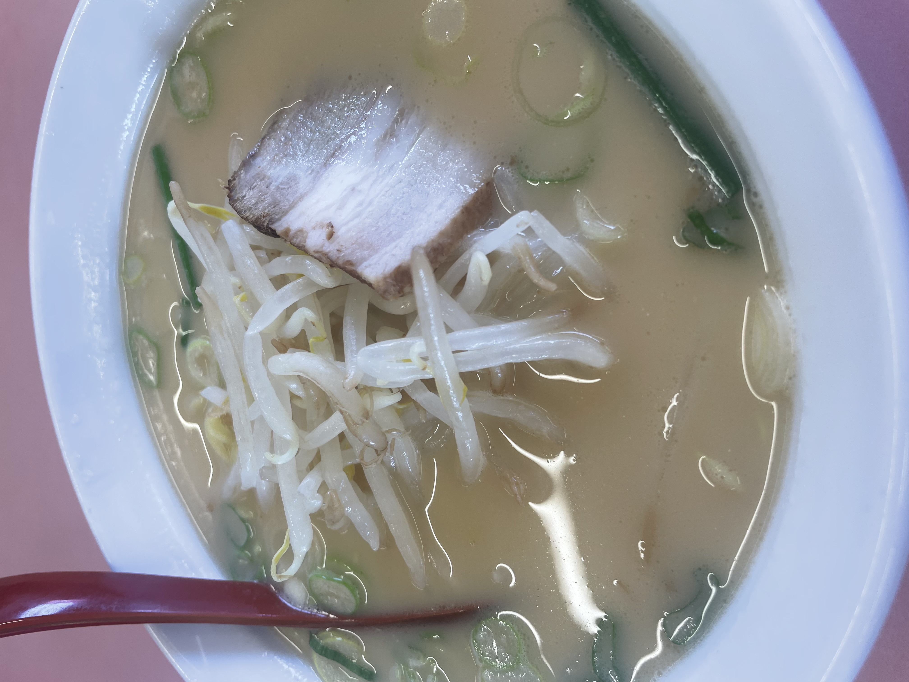
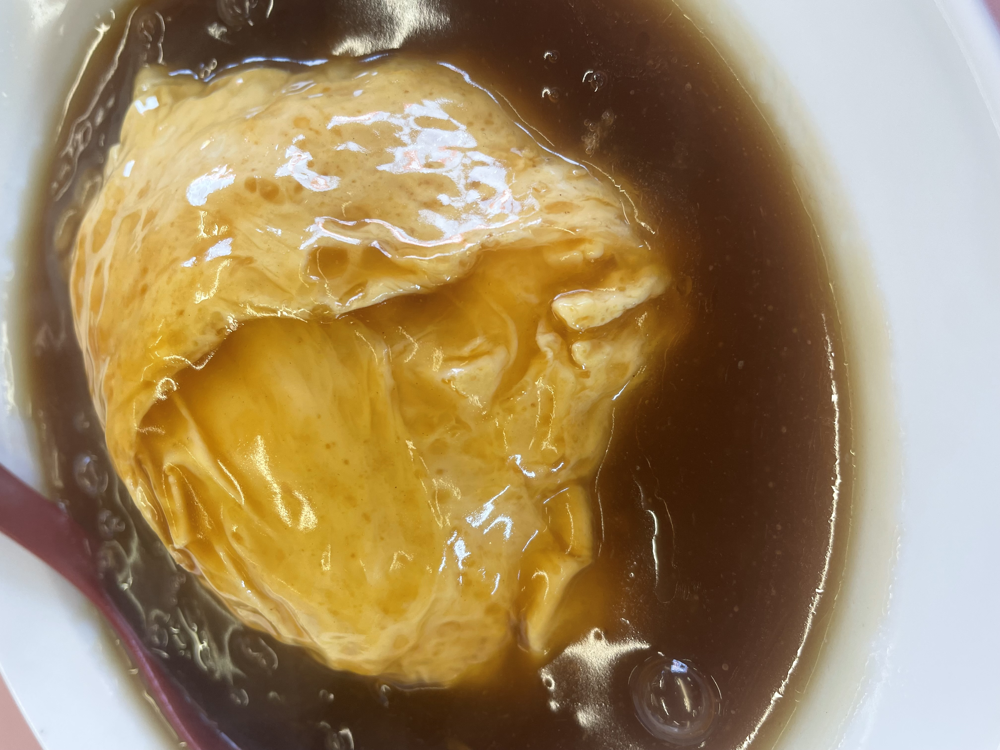 (Photo taken by myself)
25/12/29（Posted） TERUO@teruo
4.0.
■Ramen set（Taiwan ramen＋fried rice）
⇒★★★★ 4.0
■Shisenrou
■Nagoya City
■750yen
■Ate day: 25/12/26
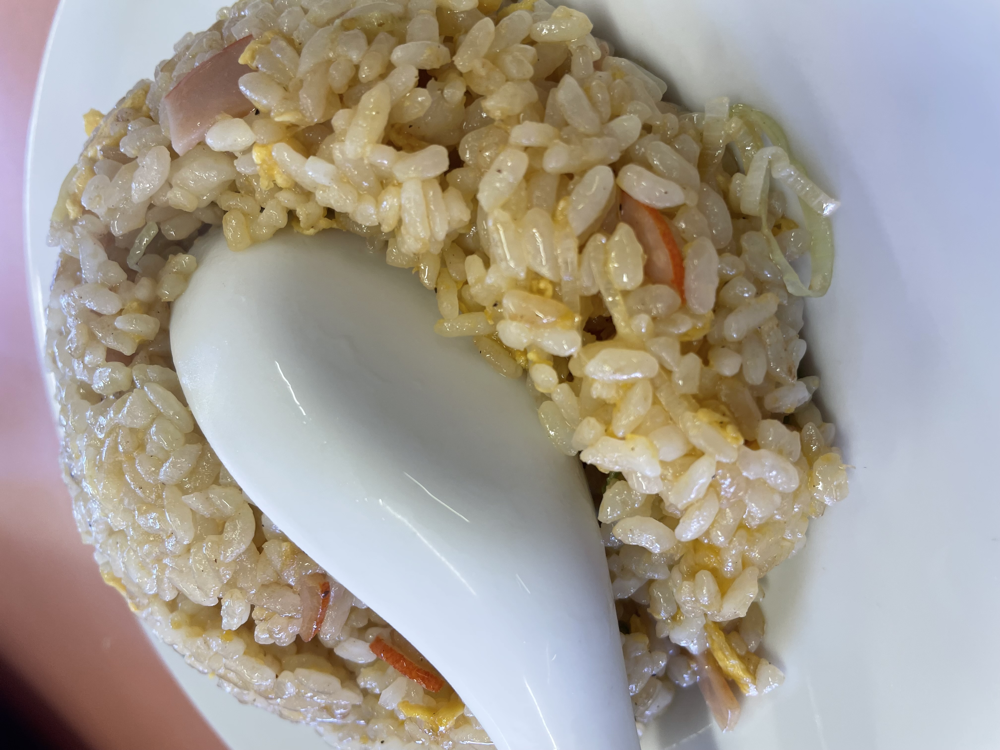
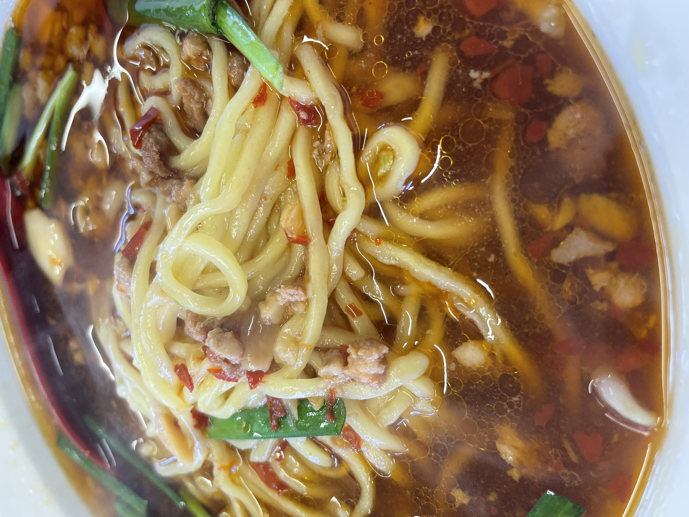 (Photo taken by myself)
25/12/29（Posted） TERUO@teruo
In the end,I want to eat it again..
■Ramen set（Taiwan ramen＋fried rice）
⇒★★★★ 4.0
■Shisenrou
■Nagoya City
■750yen
■Ate day: 25/12/22
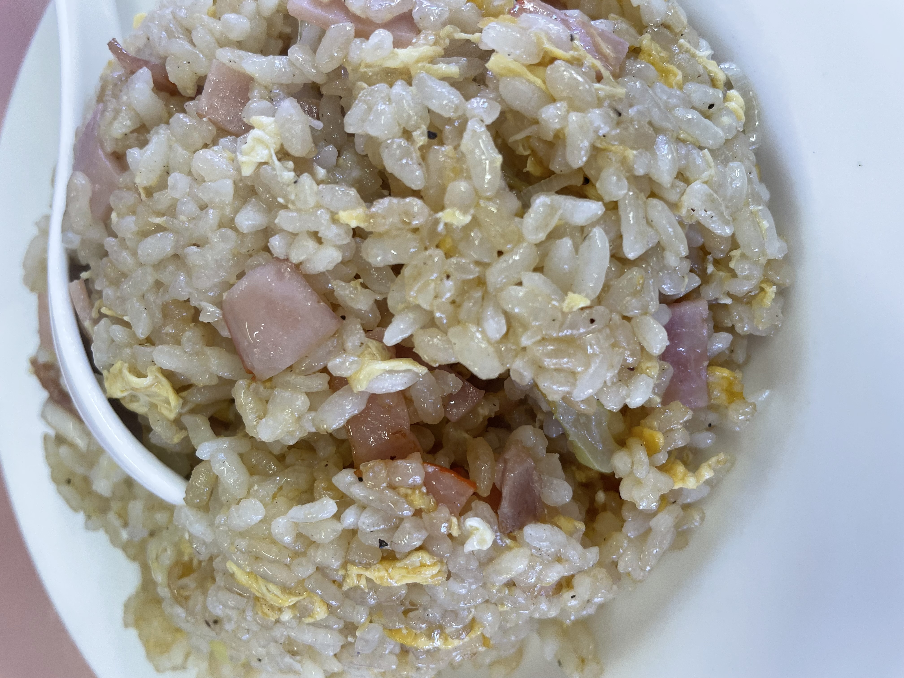
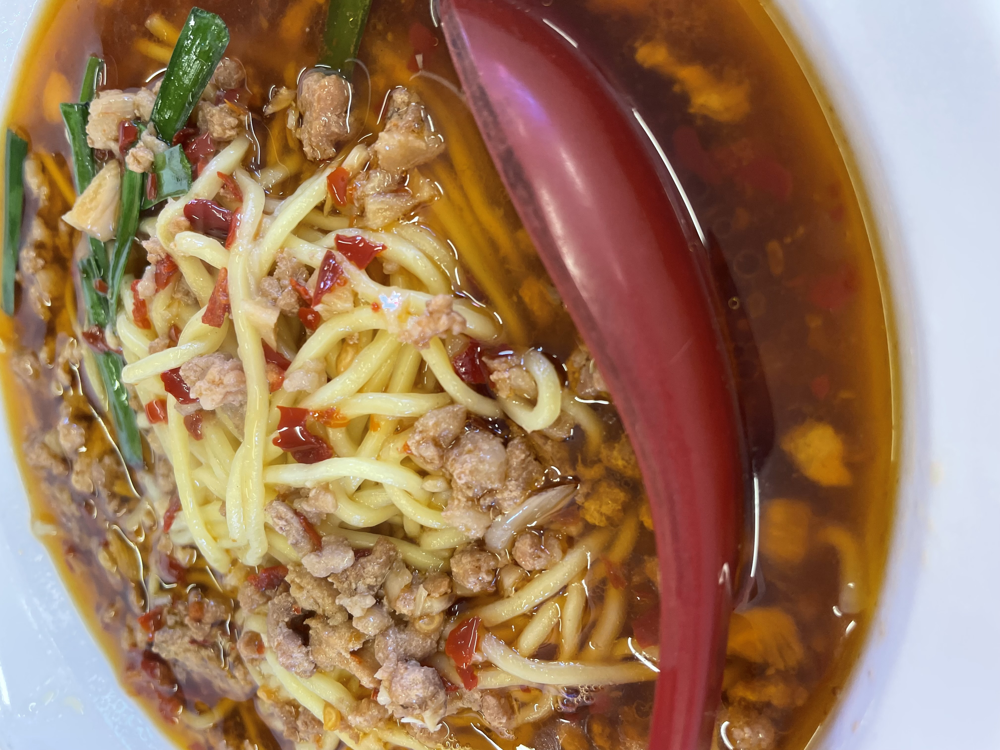 (Photo taken by myself)
25/12/5（Posted） TERUO@teruo
Good.
■Taiwan Ramen
⇒★★★★ 4.0
■Shisenrou @ Nagoya City
■600yen
■Ate day: 25/12/5

(Photo taken by myself)
25/12/2（Posted） TERUO＠teruo
Gently yummy.
■Mini Doria
⇒★★★★ 4.0
■COCO'S （Chain） @ Nagoya City
■About 600yen
■Ate Day: 25/12/2

(Photo taken by myself)
25/12/1（Posted） TERUO＠teruo
Yummy!! I love this.The soup is a monster.
With the Meat Ramen at 530 yen, I’m already happy. So damn good.
■[Super Ramen] Meat Ramen(×Start by drinking about five spoonfuls of the soup with the spoon provided. That’s where it begins.)
⇒★★★★⋆ 4.5
■Sugakiya (AEON Mall Nagoya Dome-mae) @ Nagoya City
■530yen
■Ate Day: 25/12/1

(Photo taken by myself)